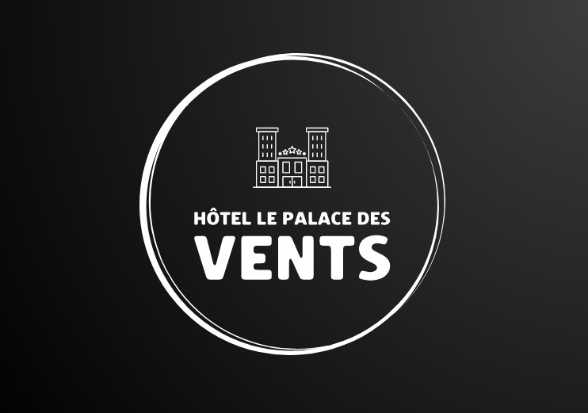
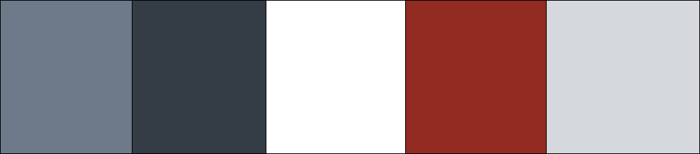

Nom
Le Palace des Vents
Thème
Hôtel inspiré des palais traditionnels du Rajasthan en Inde, avec des chambres ornées de fresques et des jardins exotiques.
Inspiration 1:
Grand Times HôtelÉléments conservés
L'idée du menu et de l'en-tête est excellente sur ce site. Le menu est d'une faible largeur, laissant déborder le logo et l'en-tête vers le haut et vers le bas.
L'idée de mettre un carrousel d'images en en-tête est aussi une très bonne idée, puisque les clients peuvent voir l'intérieur de l'hôtel dès leur arrivée.
Éléments retirés
La disposition des blocs d'informations est un peu mal organisée.
Inspiration 2:
Hôtels JaroÉléments conservés
Le bloc de réservation situé après l'en-tête est très bon pour l'expérience utilisateur. Facile à voir et rapide à trouver.
Les promotions et les activités locales sur la page d'accueil sont une très bonne idée. Cela aide le client à savoir ce qu'il pourra faire autour de l'hôtel et l'incite à faire une réservation en ligne.
Éléments retirés
Ils ont intégré deux menus de navigation l'un au-dessus de l'autre. Pourquoi ? On dirait un logiciel.
Les menus de navigation n'ont pas vraiment de design. C'est vide et l'UX/UI est légèrement négligé.
Identité visuelle
Le logo
Le logo a été conçu par des professionnels de L.A. Aussitôt que nous avons "dropé" le nom L.A., le client a approuvé.
La palette de couleurs
Les typographies
Playfair est la typographie utilisée pour les titres grâce à son côté élégant.
Pour les textes généraux, Poppin est la typographie que le client a choisie parmi celles que nous lui avons proposées. Il l'a choisie pour son aspect moderne et épuré. Elle est aussi polyvalente et convient à une variété de types de sites web.